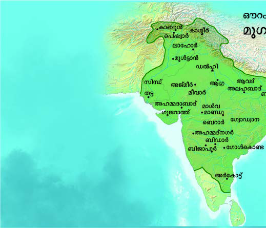
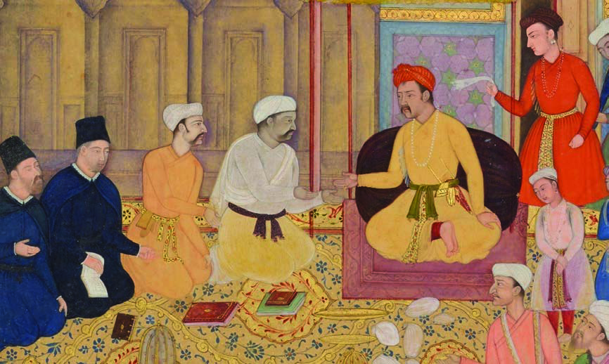
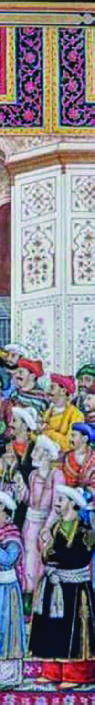
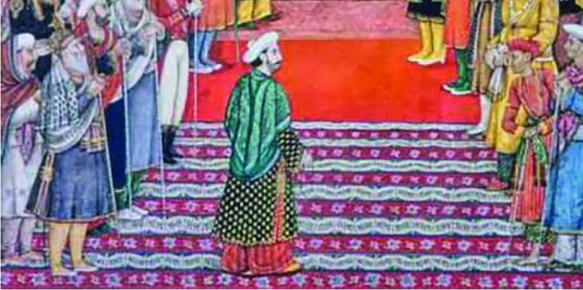
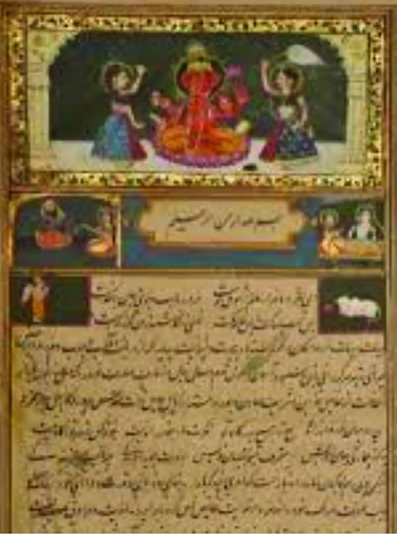
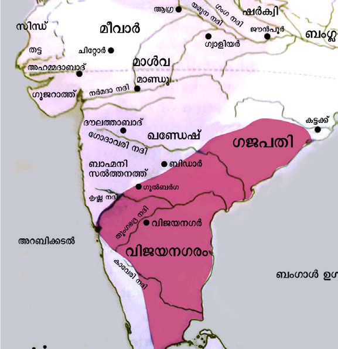

<!DOCTYPE html>
<html lang="ml">
<head>
  <meta charset="utf-8">
  <meta name="viewport" content="width=device-width, initial-scale=1.0">
  <title>Pages 1-20 - Class 7 Social science</title>
  <style>

:root {
  --bg-color: #fcfcfd;
  --card-bg: #ffffff;
  --text-color: #1e293b;
  --text-muted: #64748b;
  --primary-color: #0284c7;
  --primary-light: #e0f2fe;
  --border-color: #e2e8f0;
  --radius: 10px;
  --shadow: 0 4px 6px -1px rgb(0 0 0 / 0.05), 0 2px 4px -2px rgb(0 0 0 / 0.05);
}

body {
  font-family: -apple-system, BlinkMacSystemFont, "Segoe UI", Roboto, "Noto Sans Malayalam", "Manjari", "Gayathri", sans-serif;
  background-color: var(--bg-color);
  color: var(--text-color);
  line-height: 1.8;
  font-size: 1.1rem;
  margin: 0;
  padding: 0;
}

.container {
  max-width: 860px;
  margin: 0 auto;
  padding: 2.5rem 1.5rem 5rem 1.5rem;
}

header {
  margin-bottom: 2.5rem;
  padding-bottom: 1.5rem;
  border-bottom: 2px solid var(--border-color);
}

.badge-row {
  display: flex;
  gap: 0.5rem;
  margin-bottom: 0.75rem;
  flex-wrap: wrap;
}

.badge {
  display: inline-block;
  font-size: 0.75rem;
  font-weight: 700;
  text-transform: uppercase;
  letter-spacing: 0.05em;
  padding: 0.25rem 0.65rem;
  border-radius: 9999px;
  background: var(--primary-light);
  color: var(--primary-color);
}

.badge-medium {
  background: #fef3c7;
  color: #b45309;
}

.badge-class {
  background: #dcfce7;
  color: #15803d;
}

h1 {
  font-size: 2.1rem;
  font-weight: 800;
  margin: 0.5rem 0 1rem 0;
  line-height: 1.3;
  color: #0f172a;
}

.nav-bar {
  display: flex;
  justify-content: space-between;
  margin: 1.5rem 0;
  font-size: 0.95rem;
  flex-wrap: wrap;
  gap: 0.5rem;
}

.nav-bar a {
  color: var(--primary-color);
  text-decoration: none;
  font-weight: 600;
  padding: 0.5rem 1rem;
  border-radius: var(--radius);
  background: var(--card-bg);
  border: 1px solid var(--border-color);
  transition: all 0.2s ease;
}

.nav-bar a:hover {
  background: var(--primary-light);
  border-color: var(--primary-color);
}

.nav-bar .disabled {
  color: var(--text-muted);
  pointer-events: none;
  border-color: transparent;
  background: transparent;
}

.page-section {
  background: var(--card-bg);
  border: 1px solid var(--border-color);
  border-radius: var(--radius);
  box-shadow: var(--shadow);
  padding: 2rem;
  margin-bottom: 2.5rem;
}

.page-header {
  display: flex;
  align-items: center;
  justify-content: space-between;
  margin-bottom: 1.25rem;
  padding-bottom: 0.5rem;
  border-bottom: 1px dashed var(--border-color);
}

.page-number {
  font-size: 0.8rem;
  font-weight: 700;
  text-transform: uppercase;
  color: var(--text-muted);
  letter-spacing: 0.05em;
}

.page-content p {
  margin: 0 0 1.25rem 0;
  white-space: pre-wrap;
  word-break: break-word;
}

.page-content p:last-child {
  margin-bottom: 0;
}

.diagram-card {
  margin: 2rem 0;
  text-align: center;
  background: #f8fafc;
  border: 1px solid var(--border-color);
  border-radius: var(--radius);
  padding: 1rem;
  overflow: hidden;
}

.diagram-card img {
  max-width: 100%;
  height: auto;
  border-radius: calc(var(--radius) - 4px);
  display: inline-block;
  box-shadow: 0 2px 4px rgba(0,0,0,0.04);
}

.diagram-card figcaption {
  font-size: 0.85rem;
  color: var(--text-muted);
  margin-top: 0.75rem;
  font-weight: 500;
}

footer {
  margin-top: 3rem;
  padding-top: 2rem;
  border-top: 2px solid var(--border-color);
}

  </style>
</head>
<body>
  <div class="container">
    <header>
      <div class="badge-row">
        <span class="badge badge-class">Class 7</span>
        <span class="badge badge-medium">Malayalam Medium</span>
        <span class="badge">Social science</span>
        <span class="badge">Part 1</span>
      </div>
      <h1>Pages 1-20</h1>
      <div class="nav-bar"><span class="nav-bar disabled"></span><a href="index.html">☰ Index</a><a href="part_1_pages_2140.html">Pages 21-40 →</a></div>
    </header>
    <main>
<section class="page-section" id="page-1">
  <div class="page-header"><span class="page-number">Page 1</span></div>
  <figure class="diagram-card" id="fig_ch01_p001_01"><figcaption>Figure fig_ch01_p001_01 (Page 1)</figcaption></figure>
  <figure class="diagram-card" id="fig_ch01_p001_02"><figcaption>Figure fig_ch01_p001_02 (Page 1)</figcaption></figure>
  <figure class="diagram-card" id="fig_ch01_p001_03"><figcaption>Figure fig_ch01_p001_03 (Page 1)</figcaption></figure>
  <figure class="diagram-card" id="fig_ch01_p001_04"><figcaption>Figure fig_ch01_p001_04 (Page 1)</figcaption></figure>
  <figure class="diagram-card" id="fig_ch01_p001_05"><figcaption>Figure fig_ch01_p001_05 (Page 1)</figcaption></figure>
  <figure class="diagram-card" id="fig_ch01_p001_06"><figcaption>Figure fig_ch01_p001_06 (Page 1)</figcaption></figure>
  <figure class="diagram-card" id="fig_ch01_p001_07"><figcaption>Figure fig_ch01_p001_07 (Page 1)</figcaption></figure>
  <figure class="diagram-card" id="fig_ch01_p001_08"><figcaption>Figure fig_ch01_p001_08 (Page 1)</figcaption></figure>
  <div class="page-content">
    <p>–šŒž—Dz”šȼc<br>žwe<br>ǢšÄ¢Å§VII<br>¦u“˜ÔêžÔ<br>¥Šž„¡•Ÿ†æžæž˜•u¡Ũ«<br>‚ƮššÚ›‚§<br>–cǚš†“›„Dzš‹Dzš–u¢“•ˆŽ›”œ†–Œ›‚›(SCERT) ¢sŽ‘c<br>2024<br>ST-277-1-SOCIAL SCI. (M)-7-VOL-1</p>
  </div>
</section>
<section class="page-section" id="page-2">
  <div class="page-header"><span class="page-number">Page 2</span></div>
  <figure class="diagram-card" id="fig_ch01_p002_01"><figcaption>Figure fig_ch01_p002_01 (Page 2)</figcaption></figure>
  <figure class="diagram-card" id="fig_ch01_p002_02"><figcaption>Figure fig_ch01_p002_02 (Page 2)</figcaption></figure>
  <figure class="diagram-card" id="fig_ch01_p002_03"><figcaption>Figure fig_ch01_p002_03 (Page 2)</figcaption></figure>
  <figure class="diagram-card" id="fig_ch01_p002_04"><figcaption>Figure fig_ch01_p002_04 (Page 2)</figcaption></figure>
  <figure class="diagram-card" id="fig_ch01_p002_05"><figcaption>Figure fig_ch01_p002_05 (Page 2)</figcaption></figure>
  <figure class="diagram-card" id="fig_ch01_p002_06"><figcaption>Figure fig_ch01_p002_06 (Page 2)</figcaption></figure>
  <figure class="diagram-card" id="fig_ch01_p002_07"><figcaption>Figure fig_ch01_p002_07 (Page 2)</figcaption></figure>
  <figure class="diagram-card" id="fig_ch01_p002_08"><figcaption>Figure fig_ch01_p002_08 (Page 2)</figcaption></figure>
  <div class="page-content">
    <p>¢„”œuš†c<br>z†uŒ†e…›†šsz¢—<br>‹šŽ‚‹šuDz“›…š‚š<br>ˆĕšŠ–›ŰuzšĹŒš~š<br>ŝš“›i‚§ÚŠcuš<br>“›ŰDz—›ŒšxŒ†šucuš<br>iĄz…›‚Žcuš<br>‚“”‹†š¢Œ zš¢u<br>‚“”‹f”›•Œš¢u<br>uš¢—‚“zušƒš<br>z†uŒcu„šsz¢—<br>‹šŽ‚‹šuDz“›…š‚š<br>z¢—z¢—z¢—<br>zzzz¢—<br>Prepared by<br>State Council of Educational  Research and Training (SCERT)<br>Poojappura, Thiruvananthapuram 695012, Kerala<br>Website  :  www.scertkerala.gov.in, e-mail  :  scertkerala@gmail.com<br>Typeset and design by :  SCERT<br> First Edition - 2024<br>Printed at : KBPS, Kakkanad, Kochi-30<br>© Department of General Education, Government of Kerala<br>•˜‹œ–É“˜ŏc<br>7<br>Ƃ‚›č<br>gŦDzm¡źŽšzDzŒš§mƽšgŦDzښŽcm¡ź–¢—š„Žœ<br>–¢—š„ŽŶšŽš§<br>|šť m¡ź ŽšzDz¡Ĺ ¢ǜ—›Úų –ƠžÅĴ“c £““›…Dz<br>ˆžÅĴ“Œše‚›¡źˆšŽƠŽDzśƴ|šťe‹›Œš†c¡sšǬų<br>|šťm¡źŒš‚šˆ›‚šÚ¡‘c uŽÚŶš¡Žc<br>Œ‚›Ʊų“¡ŽcŠ—Œš†›Úc<br>|šťm¡źŽšzDzś¡źcm¡ź†šĞsšŽ¡}c ¢äŒĹ›†c<br>o”ǵŽDzś†c ¢“Ĭ›Ƃŀ›Úc</p>
  </div>
</section>
<section class="page-section" id="page-3">
  <div class="page-header"><span class="page-number">Page 3</span></div>
  <figure class="diagram-card" id="fig_ch01_p003_01"><figcaption>Figure fig_ch01_p003_01 (Page 3)</figcaption></figure>
  <figure class="diagram-card" id="fig_ch01_p003_02"><figcaption>Figure fig_ch01_p003_02 (Page 3)</figcaption></figure>
  <figure class="diagram-card" id="fig_ch01_p003_03"><figcaption>Figure fig_ch01_p003_03 (Page 3)</figcaption></figure>
  <figure class="diagram-card" id="fig_ch01_p003_04"><figcaption>Figure fig_ch01_p003_04 (Page 3)</figcaption></figure>
  <figure class="diagram-card" id="fig_ch01_p003_05"><figcaption>Figure fig_ch01_p003_05 (Page 3)</figcaption></figure>
  <figure class="diagram-card" id="fig_ch01_p003_06"><figcaption>Figure fig_ch01_p003_06 (Page 3)</figcaption></figure>
  <figure class="diagram-card" id="fig_ch01_p003_07"><figcaption>Figure fig_ch01_p003_07 (Page 3)</figcaption></figure>
  <figure class="diagram-card" id="fig_ch01_p003_08"><figcaption>Figure fig_ch01_p003_08 (Page 3)</figcaption></figure>
  <div class="page-content">
    <p>Ƃ›¡ƀĞsžĞsš¢Ž<br>–šŒž—›szœ“›‚Ĺ›¡źc“›„DZš‹DZš–“›sš–Ĺ›¡źc†›†›ƹ›†š<br>…šŽŒšˆ~†”štš§–šŒž—DZ”šȻc‹ž‚sš¡Ĺe}›Ǚš†ŒšÚ›<br>–Œž—¡Ĺ Œ¢ųšĞ †›Úų‚›†c ˆ‚› sš“c xǮˆš}s‘c<br>Žžˆ¡ƀ}Ĺų “›ˆŽœ‚ –š—xŽDZā¡‘ Œ›s}ڝų‚›†c –šŒž—DZ<br>”šȻˆ~†Ĺ›ž¡} s’›¢Ĭ‚Ĭ§ ‹Žv}† Œ¢ųšĞ“Ʃų Œ­›<br>sš“sš”ā¡‘”šȻœx›Ŧ¢š¡} †}ƀ›šÚš†cŽšzDZś¡ź–Ơ„§<br>“DZ“Ǚ¡ˆŽ›¢ˆš•›ƀ›Úų‚›†Œš“”DZŒš–š…DZ‚sÇs¡Ĭŝ<br>ų‚›†c–šŒž—DZ”šȻc †¡ƣ–—š›ÚųĬ§<br>ˆšÅ”Ǵ“‚§ÚŽ›Ú¡ƀ}ųmƼš–šŒž—›s“›‹šuā¡‘ciǡښǫų<br>Œ†fǙ›‚›“‘Åŝų‚›†c†š}›¡źių‚Œš–ǰǗšŽ›sŒ‚†›Ž¢ˆä<br>ˆšŽƠŽDZā¡‘ sšĹ–žä›Úų‚›†c†ŒÚ§–Œž—¡Ĺ s›ă§“DZÞ<br>Œš…šŽiĬšsc‹žŒ›”šȻˆŽŒš–“›¢”•‚sÇs¡ĬŚ†c<br>ƂՂ›–cŽäĹ›†csšÅ•›s –cȾ‚›e‹›ƽŗ›¡ƀ}Ĺš†cpŽ<br>–šŒž—DZ”šȻ“›„DZšÅƒ›Ú§s’›¢Ĭ‚Ĭ§<br>ˆŽ›•§sŽ›ă ¢sŽ‘ ˆš~DZˆŗ‚› xĞڞ}§ 2023 Œ¢ųšĞ“Ʃų gŎc<br>ˆ¢ŽšuŒ†<br>sš’§xƀš}sÇ iÇ¡ƀ}Ĺ›¡sšĬǫ n’ǰ 㚖›¡<br>–šŒž—DZ”šȻc ‹šuc 1 †›ā‘¡} zœ“›‚ “›zĹ›†§ Œ‚ÆÚžĞšs<br>¡Œų§Ƃ‚DZš”›Úų<br>–Œž—¡Ĺ<br>sž}‚Æ<br>x†šŃsŒšÚų‚›†c<br>Œš†“›sŒžDZāÇ<br>iÅśƀ›}›Úų‚›†c h ˆš~ˆǘsc †›ā¡‘ –—š›Ú¡Œų§<br>iƀĬ§<br>¢Ǜ—¢Ĺš¡}<br>¢šzƂsš”§fÅ¡s<br>ÜÅ<br>m–§–›gfÅ}›¢sŽ‘c</p>
  </div>
</section>
<section class="page-section" id="page-4">
  <div class="page-header"><span class="page-number">Page 4</span></div>
  <figure class="diagram-card" id="fig_ch01_p004_01"><figcaption>Figure fig_ch01_p004_01 (Page 4)</figcaption></figure>
  <figure class="diagram-card" id="fig_ch01_p004_02"><figcaption>Figure fig_ch01_p004_02 (Page 4)</figcaption></figure>
  <figure class="diagram-card" id="fig_ch01_p004_03"><figcaption>Figure fig_ch01_p004_03 (Page 4)</figcaption></figure>
  <figure class="diagram-card" id="fig_ch01_p004_04"><figcaption>Figure fig_ch01_p004_04 (Page 4)</figcaption></figure>
  <figure class="diagram-card" id="fig_ch01_p004_05"><figcaption>Figure fig_ch01_p004_05 (Page 4)</figcaption></figure>
  <figure class="diagram-card" id="fig_ch01_p004_06"><figcaption>Figure fig_ch01_p004_06 (Page 4)</figcaption></figure>
  <figure class="diagram-card" id="fig_ch01_p004_07"><figcaption>Figure fig_ch01_p004_07 (Page 4)</figcaption></figure>
  <figure class="diagram-card" id="fig_ch01_p004_08"><figcaption>Figure fig_ch01_p004_08 (Page 4)</figcaption></figure>
  <figure class="diagram-card" id="fig_ch01_p004_09"><figcaption>Figure fig_ch01_p004_09 (Page 4)</figcaption></figure>
  <div class="page-content">
    <p>ˆš~ˆǘsŽx†š–Œ›‚›<br>eښ„Œ›s§¢sš›¢†ǮÅ<br>¢š¡smÄu¢•§<br>¡xÅŒšÄ¢sŽ‘ s­Ã–›Æ¢‰šÅ—›¢ǡš›ÚƏ›–Åă§<br>¢š£Šz¡s–›<br>£“–§xšÄ–ÅgÄxšÅz§
¢sů–Å“sš”šsš–¢uš§<br>¢še†›Æ›<br>›–Åă§q‰›–Åm–§–›gfÅ}›¢sŽ‘c<br>e†–§mÄm–§<br>u¢“•s“›„DZšÅƒ›mÄm–§m–§¢sš¢‘z§†›¢ŒÆ<br>mc¢zšÃŠš§<br>mc“›mă§m–§m–§eŽŒš†žÅ‚›Ž“†ŦˆŽc<br>¢zšÃ–Ãǯ›£“<br>–›m–§omă§m–§m–§¢‰šÅ¡‰§“š‘sc<br>Օ§Äs›<br>mgp›Ğ
sĴžÅ–­Ĺ§<br>ŒǙ‰ŒǯŞÅ<br>}œăÅmDZž¢ÚǮÅu“gÄǡ›ǮDZžĞ§q‰§}œăÅ<br>mDZž¢Ú•ÄŒƀc<br>ǯ›m–§†›•<br>m–§mÄ“›ˆ›m–§ŒŽ‚ŒÃˆǫ›¡sšƼc<br>†›•mcm–§<br>ˆ›mă§m–§m–§¡Œ’¢“›ˆĹ†c‚›Ğ<br>¢Ƃcz›Ĺ§–¢Ž•§ŠšŠ<br>fÅĞ›ǡ§<br>Ƃ›m–§m–§<br>z›Š›mă§m–§m–§Œ›‚›ÅŒ‚›Ž“†ŦˆŽc<br>ŽšzĈ›ˆ›<br>¡ğ›†ÅŠ›fÅ–›Œƀc<br>ŽšzÄs‘āŽ<br>gŽ›āĴžÅmă§m–§m–§“}sŽ¢sš’›¢Úš}§<br>–š§sŒšÅˆ›<br>mmcmƈ›m–§s‘›šĞŒÚ§Œƀc<br>¢šˆ›ˆ›eƒÇ–šs§<br>e¢–š–›¢Ǯ§¡Ƃš‰–Å›Ğ
<br>›ƀšÅЧ¡Œź§q‰§—›ǡ›<br>ˆ›m–§mcp¢sš¢‘z§<br>‚›ŽžŽāš}›<br>¢še†œ•§“›fÅ<br>e–›ǡź§¡Ƃš‰–Å<br>›ƀšÅЧ¡Œź§q‰§¡ˆš‘›Ǯ›ÚÆ–Ä–§<br>m–§mfÅŠ›}›mcu“¢sš¢‘z§<br>¡sš›šĬ›<br>¡xÅ¢ˆ’§–Ã<br>e£ǵ–Å<br>“›„u§…Å<br>ecuāÇ<br>–cǚš†“›„Dzš‹Dzš–u¢“•ˆŽ›”œ†–Œ›‚› (SCERT)<br>“›„DZš‹“ĈžzƀŽ‚›Ž“†ŦˆŽc</p>
  </div>
</section>
<section class="page-section" id="page-5">
  <div class="page-header"><span class="page-number">Page 5</span></div>
  <figure class="diagram-card" id="fig_ch01_p005_01"><figcaption>Figure fig_ch01_p005_01 (Page 5)</figcaption></figure>
  <figure class="diagram-card" id="fig_ch01_p005_02"><figcaption>Figure fig_ch01_p005_02 (Page 5)</figcaption></figure>
  <figure class="diagram-card" id="fig_ch01_p005_03"><figcaption>Figure fig_ch01_p005_03 (Page 5)</figcaption></figure>
  <figure class="diagram-card" id="fig_ch01_p005_04"><figcaption>Figure fig_ch01_p005_04 (Page 5)</figcaption></figure>
  <figure class="diagram-card" id="fig_ch01_p005_05"><figcaption>Figure fig_ch01_p005_05 (Page 5)</figcaption></figure>
  <figure class="diagram-card" id="fig_ch01_p005_06"><figcaption>Figure fig_ch01_p005_06 (Page 5)</figcaption></figure>
  <figure class="diagram-card" id="fig_ch01_p005_07"><figcaption>Figure fig_ch01_p005_07 (Page 5)</figcaption></figure>
  <figure class="diagram-card" id="fig_ch01_p005_08"><figcaption>Figure fig_ch01_p005_08 (Page 5)</figcaption></figure>
  <figure class="diagram-card" id="fig_ch01_p005_09"><figcaption>Figure fig_ch01_p005_09 (Page 5)</figcaption></figure>
  <figure class="diagram-card" id="fig_ch01_p005_10"><figcaption>Figure fig_ch01_p005_10 (Page 5)</figcaption></figure>
  <figure class="diagram-card" id="fig_ch01_p005_11"><figcaption>Figure fig_ch01_p005_11 (Page 5)</figcaption></figure>
  <figure class="diagram-card" id="fig_ch01_p005_12"><figcaption>Figure fig_ch01_p005_12 (Page 5)</figcaption></figure>
  <figure class="diagram-card" id="fig_ch01_p005_13"><figcaption>Figure fig_ch01_p005_13 (Page 5)</figcaption></figure>
  <figure class="diagram-card" id="fig_ch01_p005_14"><figcaption>Figure fig_ch01_p005_14 (Page 5)</figcaption></figure>
  <figure class="diagram-card" id="fig_ch01_p005_15"><figcaption>Figure fig_ch01_p005_15 (Page 5)</figcaption></figure>
  <figure class="diagram-card" id="fig_ch01_p005_16"><figcaption>Figure fig_ch01_p005_16 (Page 5)</figcaption></figure>
  <div class="page-content">
    <p>1. Œ…DzsšgŦDz7-24<br>2. Œ…DzsšgŦDz–DZǘšŽ›sƂǚš†āÇ25-38<br>3. ‹Žv}†“’›c “’›sšĞ›c39-53<br>4. e†œ‚››Æ†›ų§†œ‚››¢Ú§54-67<br>5. †ƣ¡}‹žŒ›68-81<br>6. gŦDzÄiˆ‹žtįc82-93<br>7. ‹¢äDzšÆˆš„†cŒ‚Æ‹äDz–Žä “¡Ž 94-110<br>e…›s“š†Ʃ§“››ŽĹ›†§<br>“›¢…Œš¢ÚĬ‚›ƽ<br>ˆ~†Ƃ“Åņc<br>†ŒÚ§“š›ÚDZ<br>iǬ}Úc<br>hˆǙsśÆˆ~†–­sŽDzś†š›<br>x›x›ǥāÇiˆ¢šu›ă›Ž›Úų<br>‚}ÅƂ“ÅņāÇ</p>
  </div>
</section>
<section class="page-section" id="page-6">
  <div class="page-header"><span class="page-number">Page 6</span></div>
  <figure class="diagram-card" id="fig_ch01_p006_01"><figcaption>Figure fig_ch01_p006_01 (Page 6)</figcaption></figure>
  <figure class="diagram-card" id="fig_ch01_p006_02"><figcaption>Figure fig_ch01_p006_02 (Page 6)</figcaption></figure>
  <figure class="diagram-card" id="fig_ch01_p006_03"><figcaption>Figure fig_ch01_p006_03 (Page 6)</figcaption></figure>
  <figure class="diagram-card" id="fig_ch01_p006_04"><figcaption>Figure fig_ch01_p006_04 (Page 6)</figcaption></figure>
  <figure class="diagram-card" id="fig_ch01_p006_05"><figcaption>Figure fig_ch01_p006_05 (Page 6)</figcaption></figure>
  <figure class="diagram-card" id="fig_ch01_p006_06"><figcaption>Figure fig_ch01_p006_06 (Page 6)</figcaption></figure>
  <figure class="diagram-card" id="fig_ch01_p006_07"><figcaption>Figure fig_ch01_p006_07 (Page 6)</figcaption></figure>
  <figure class="diagram-card" id="fig_ch01_p006_08"><figcaption>Figure fig_ch01_p006_08 (Page 6)</figcaption></figure>
  <figure class="diagram-card" id="fig_ch01_p006_09"><figcaption>Figure fig_ch01_p006_09 (Page 6)</figcaption></figure>
  <div class="page-content">

  </div>
</section>
<section class="page-section" id="page-7">
  <div class="page-header"><span class="page-number">Page 7</span></div>
  <figure class="diagram-card" id="fig_ch01_p007_01"><figcaption>Figure fig_ch01_p007_01 (Page 7)</figcaption></figure>
  <figure class="diagram-card" id="fig_ch01_p007_02"><figcaption>Figure fig_ch01_p007_02 (Page 7)</figcaption></figure>
  <figure class="diagram-card" id="fig_ch01_p007_03"><figcaption>Figure fig_ch01_p007_03 (Page 7)</figcaption></figure>
  <figure class="diagram-card" id="fig_ch01_p007_04"><figcaption>Figure fig_ch01_p007_04 (Page 7)</figcaption></figure>
  <div class="page-content">
    <p>Œs‘›Æ¡sš}Ĺ›Ž›Úų x›Ņādž›Žœä›ÚsŒ…DZsšgŦDZ›Æ‹Žc<br>†}śŽĬ§ŽšzDZā‘¡} xŽ›Ņ¢”•›ƀs‘š§g“<br>g‚›Æf„DZ¢Ĺ‚§†›āÇÚ§ˆŽ›xŒĬšsŒ¢Ƽš<br>–Ǵš‚ũDZ„›†Ĺ›Æ†ƣ¡} Ƃ…š†Œũ›g“›¡} ¢„”œˆ‚šsiÅŝų‚§†›āÇ<br>sĬ›Ž›Úc<br>ŒuÇxâ“Åśš•šz—š¡ź‹ŽsšĹ§Ɨ››Æ†›Åƣ›ă ¡x¢ÿšĞš<br>›‚§<br>g¢‚ sšĹ§„䛢ŦDZ›Æ†›†›ų›Žų“›z†uŽĹ›¡ź‚Ǚš†Œš<br>—cˆ›¡} x›ŅŒš§ŽĬšŒ‚š›sšų‚§<br>hŽĬ§ŽšzDZā¡‘ڝ›ăš§he…DZšĹ›Æ†ƣÇxÅă ¡xƭų‚§<br>Œ…DzsšgŦDz<br>1<br>x›Ņc 1.1<br>x›Ņc 1.2</p>
  </div>
</section>
<section class="page-section" id="page-8">
  <div class="page-header"><span class="page-number">Page 8</span></div>
  <figure class="diagram-card" id="fig_ch01_p008_01"><figcaption>Figure fig_ch01_p008_01 (Page 8)</figcaption></figure>
  <figure class="diagram-card" id="fig_ch01_p008_02"><figcaption>Figure fig_ch01_p008_02 (Page 8)</figcaption></figure>
  <figure class="diagram-card" id="fig_ch01_p008_03"><figcaption>Figure fig_ch01_p008_03 (Page 8)</figcaption></figure>
  <figure class="diagram-card" id="fig_ch01_p008_04"><figcaption>Figure fig_ch01_p008_04 (Page 8)</figcaption></figure>
  <figure class="diagram-card" id="fig_ch01_p008_05"><figcaption>Figure fig_ch01_p008_05 (Page 8)</figcaption></figure>
  <figure class="diagram-card" id="fig_ch01_p008_06"><figcaption>Figure fig_ch01_p008_06 (Page 8)</figcaption></figure>
  <figure class="diagram-card" id="fig_ch01_p008_07"><figcaption>Figure fig_ch01_p008_07 (Page 8)</figcaption></figure>
  <figure class="diagram-card" id="fig_ch01_p008_08"><figcaption>Figure fig_ch01_p008_08 (Page 8)</figcaption></figure>
  <figure class="diagram-card" id="fig_ch01_p008_09"><figcaption>Figure fig_ch01_p008_09 (Page 8)</figcaption></figure>
  <figure class="diagram-card" id="fig_ch01_p008_10"><figcaption>Figure fig_ch01_p008_10 (Page 8)</figcaption></figure>
  <figure class="diagram-card" id="fig_ch01_p008_11"><figcaption>Figure fig_ch01_p008_11 (Page 8)</figcaption></figure>
  <figure class="diagram-card" id="fig_ch01_p008_12"><figcaption>Figure fig_ch01_p008_12 (Page 8)</figcaption></figure>
  <figure class="diagram-card" id="fig_ch01_p008_13"><figcaption>Figure fig_ch01_p008_13 (Page 8)</figcaption></figure>
  <figure class="diagram-card" id="fig_ch01_p008_14"><figcaption>Figure fig_ch01_p008_14 (Page 8)</figcaption></figure>
  <figure class="diagram-card" id="fig_ch01_p008_15"><figcaption>Figure fig_ch01_p008_15 (Page 8)</figcaption></figure>
  <div class="page-content">
    <p>ŒuNjŽc<br>1526ÆŒuNjŽcǙšˆ›ă‚§ŠšŠš§1857 “¡ŽƗ›¢sůŒšÚ›gŦDZ ‹Ž›ă<br>ŒuÇ‹Žsš¡Ĺ Ƃ…š† ‹Žš…›sšŽ›sÇf¡Žš¡Úš¡ų§†›āÇڏ›š¢Œš?<br>ŒuÇ<br>‹Žc<br>rcu¢–Š§(1658-1707)<br>ŠšŠÅ(1526-1530)<br>es§ŠÅ(1556-1605)<br>z—ǰuœÅ(1605-1627)<br>•šz—šÄ(1628-1658)<br>—ŒžÃ(1530-1540)<br>(1555-1556)<br>ˆ„–žŽDZ†›Æ†›ų§Ƃ…š†¡ƀĞŒuÇxâ“ÅśŒšÅf¡Žš¡Úš›Žų¡“ų§<br>†›āÇ‚›Ž›ă›Ě¢Ƽš?<br>ŒuÇŽšzšÚŶšŽ¡} x›ŅāÇ¢”tŽ›ă§pŽfƊc‚ƭššÚž<br>“‘¡Ž“›ɀ‚ŒšŽšzDZŒš›ŽųŒu‘Ž¢}‚§gų¡ĹgŦDZÚ§ˆ¢ŒeÆ<br>ŽšzDZā‘›¢ÚcŒuNjŽc “DZšˆ›ă›Žų<br>x›Ņc 1.3<br>rcu¢–Š›¡źsš¡ĹŒuǎšzDZc<br>–šŒž—Dz”šȼc<br>‹šuc 1<br>8<br>VII</p>
  </div>
</section>
<section class="page-section" id="page-9">
  <div class="page-header"><span class="page-number">Page 9</span></div>
  <figure class="diagram-card" id="fig_ch01_p009_01"><figcaption>Figure fig_ch01_p009_01 (Page 9)</figcaption></figure>
  <figure class="diagram-card" id="fig_ch01_p009_02"><figcaption>Figure fig_ch01_p009_02 (Page 9)</figcaption></figure>
  <figure class="diagram-card" id="fig_ch01_p009_03"><figcaption>Figure fig_ch01_p009_03 (Page 9)</figcaption></figure>
  <figure class="diagram-card" id="fig_ch01_p009_04"><figcaption>Figure fig_ch01_p009_04 (Page 9)</figcaption></figure>
  <figure class="diagram-card" id="fig_ch01_p009_05"><figcaption>Figure fig_ch01_p009_05 (Page 9)</figcaption></figure>
  <figure class="diagram-card" id="fig_ch01_p009_06"><figcaption>Figure fig_ch01_p009_06 (Page 9)</figcaption></figure>
  <div class="page-content">
    <p>‹žˆ}Ĺ›Æ†›ųcgų¡Ĺn¡‚Ƽǰ ŽšzDZā‘›ÆŒuNjŽc “DZšˆ›ă›Ž<br>ų¡“ų§s¡ĬśˆĞ›s¡ƀ}Ĺs<br>z<br>e‰§uš†›ǙšÄ<br>z<br>z<br><br>Œu‘ŽcpųDZˆš†›ƀŧŗ“c<br>͌c¢ušÇÎmųˆ„Ĺ›Æ†›ųš§͌uÇÎmų ¢ˆŽ„§‹“›ă‚§ŒuÇ<br>ŽšzDZǙšˆs†šŠšŠÅˆ›‚š“§“’›‚Åڛ‹Žš…›sšŽ›š›Žų<br>‚›Œž›¡źcŒš‚š“§“’›Œc¢ušÇŽšzš“š›Žų ¡xÿ›–§tš¡źc<br>ˆ›ÄušŒ›š›Žųˆ‚›†šǰ†žǮšĬ›Æž¢šˆDZŽš§hŽšz“c”¡Ĺ<br>͌uÇÎmų§“›‘›ă‚}ā›‚§<br>¢š„›“c”Ĺ›¡e“–š†¡Ĺ‹Žš…›sšŽ›šgƖš—›c¢š„›csšŠž‘›¡<br>‹Žš…›sšŽ›š›Žų ŠšŠc 1526 Æ—Ž›š†›¡ ˆš†›ƀĹ›Æ¡“ă§<br>nǮŒĞ›xŽ›ŅśÆg‚›¡†pųǰˆš†›ƀŧŗ¡Œų§“›¢”•›ƀ›Úų<br>hŗ“›zĹ›ž¡}š§ŠšŠÅgŦDZ›ÆŒuÇ‹ŽcǙšˆ›ă‚§<br>Ïs›’Ú›¡† “›ƀ›ă es§ŠÅ xâ“Åś †›ŽDZš‚†š›Ž›Úų<br>‚œÅ㍚ces§ŠÅŒ—š†šxâ“Åśš›Žųp¢Ž–Œc<br>Ƃzs‘›Æ†›ų§¢Ǜ—“cŠ—Œš†“c“›¢…‚Ǵ“c‹›ă¡sšĬ<br>‚¡ųfčš”Þ›†›†›ÅŚÄe¢Ŕ—Ĺ›†§–š…›ăiÅų<br>Ë‚š’§ų“›‹šuā¡‘ų‚Žc‚›Ž›“›Ƽš¡‚cˆŽ›x›‚eˆŽ›x›‚<br>“DZ‚DZš–Œ›Ƽš¡‚c —›ŭâ›ǘDZÄŒǟœc “DZ‚DZš–Œ›Ƽš¡‚c ‚DZ†œ‚›<br>†}ƀ›šÚ›sŽĹ¢Žš}§”ÞŒšce”Þ¢Žš}§sŽ¢š}c ¡ˆŽŒš›<br>–ÆŚÄmƼš“ÅڝcƂ›¡ƀĞ“†š›ŽųÐ<br>¡z–DZžĞ§ˆš‚›Ž›ˆ››zš›s§es§ŠÅxâ“Åś¡} ŒŽš†ŦŽc–›g<br>1605) m’‚›e†¢”šx†Ú›ƀš›‚§<br>hs›ƀ›Æ†›ų§ŒuÇxâ“Åśš›Žųes§Š›¡†Ú›ă§†›āÇÚ§<br>m¡Ŧš¡Úš§Œ†Ǡ›šÚšÄs’›ų‚§<br>z<br>es§ŠÅe‚›”Þ†šxâ“Åśš›Žų<br>z<br>z<br>z<br>Œ…DzsšgŦDz<br>9</p>
  </div>
</section>
<section class="page-section" id="page-10">
  <div class="page-header"><span class="page-number">Page 10</span></div>
  <figure class="diagram-card" id="fig_ch01_p010_01"><figcaption>Figure fig_ch01_p010_01 (Page 10)</figcaption></figure>
  <figure class="diagram-card" id="fig_ch01_p010_02"><figcaption>Figure fig_ch01_p010_02 (Page 10)</figcaption></figure>
  <div class="page-content">
    <p>x›Ņc1.4 <br>ŒuÇŽšz“c”Ĺ›¡Ƃ–›ŗ†š‹Žš…›sšŽ›š›Žųes§ŠÅ<br>“›“›…Œ‚ǙŽŒš›xÅă†}ŝų<br>1575Æ‚¡źˆ‚›‚Ǚš†Œš‰¢ĹƀžÅ–›â››Æes§ŠÅgŠš„ŧ<br>tš†ˆ›s’›ƀ›ă“›“›…Œ‚ā‘›¡ˆį›‚ŽcƂŒtŽcg“›¡}pŝ<br>¢xÅų›Žųes§ŠÅˆ›Ŧ}Åų›ŽųŒ‚–—›Ǒ‚š†Ĺ›†§gŎcxÅăsÇ<br>iŌi„š—Žā‘š§<br>mƼšŒ‚ā‘¡}c†Ƽ“”āÇ¢sšÅśÚ›es§ŠÅŽžˆc¡sš}Ĺ„Å”†Œš§<br>„›Ägš—›mƼš“Åڝc–Œš…š†ceƒ“š–Æ—§gsÆmų‚š§h<br>„Å”†Ĺ›¡źsš‚ÆmƼš„Å”†ā‘cŒ†•DZŽ¡}¢äŒĹ›†¢“Ĭ›ǫ‚š§<br>mųf”c“DZތšÚsš›Žųe¢Ŕ—Ĺ›¡źäDZc<br>x›Ņc1.5 <br>‰¢ĹƀžÅ–›â›<br>–šŒž—Dz”šȼc<br>‹šuc 1<br>10<br>VII</p>
  </div>
</section>
<section class="page-section" id="page-11">
  <div class="page-header"><span class="page-number">Page 11</span></div>
  <figure class="diagram-card" id="fig_ch01_p011_01"><figcaption>Figure fig_ch01_p011_01 (Page 11)</figcaption></figure>
  <figure class="diagram-card" id="fig_ch01_p011_02"><figcaption>Figure fig_ch01_p011_02 (Page 11)</figcaption></figure>
  <figure class="diagram-card" id="fig_ch01_p011_03"><figcaption>Figure fig_ch01_p011_03 (Page 11)</figcaption></figure>
  <figure class="diagram-card" id="fig_ch01_p011_04"><figcaption>Figure fig_ch01_p011_04 (Page 11)</figcaption></figure>
  <figure class="diagram-card" id="fig_ch01_p011_05"><figcaption>Figure fig_ch01_p011_05 (Page 11)</figcaption></figure>
  <figure class="diagram-card" id="fig_ch01_p011_06"><figcaption>Figure fig_ch01_p011_06 (Page 11)</figcaption></figure>
  <div class="page-content">
    <p>Íz–›Îmų Œ‚†›s‚›†›Å՚ڛ‚§‹ŽŽcuŝces§ŠÅ–—›Ǒ‚š†c<br>ˆ›Ŧ}Åų›Žųmų‚›†§¡‚‘›“š§ŒuÇ‹ŽĹ›¡źmƼš¢Œts‘›c<br>mƼšŒ‚Ǚ¢Žc‚DZŒš›ˆŽ›u›ă›ŽųŽšzš¢}šŌšÇŽšzšŒšÄ–›ā§<br>Žšzš‹u“Ä„š–§ŠœÅŠÆmų›“Åes§ŠÅxâ“Åś¡} Žšz–„Ǡ›Æ<br>ių‚Ǚš†c “—›ă›Žų“Ž›ÆƂ…š†›s‘š§<br>es§ŠÅgŠš„ŧtš†ˆ›s’›ƀ›ă‚›¡źäDZ¡ŒŦš›Žų?<br>s›ƀ§‚ƭššÚs<br>Ïm¡źe†š›sÇŒǮ§Œ‚“›‹šuā‘Œš›”Ņ‚›Æ“Åśă<br>–Œc ˆš’šÚŽ‚§g‚Ž Œ‚Ǚ¢Žš}ǫŠŰśÆ–Æ—§gsÆ<br>mƼš“Åڝc–Œš…š†c
mųf”ce†“ÅĹ›Ú¡ĞƜuā¡‘<br>¡sšƼs¢š ŗ–Œā‘›¡š’›¡sf…ā¡‘}Ús¢š ¡xƭŽ‚§ÎÎ<br>es§ŠÅ‚¡źe†š›s¢‘š}§sƹ›ă‚š›ŒuÇ–ÆŚ†š›Žų<br>z—ǰuœÅ‚¡źqÅƣڝ›ƀš͂–žs›z—ǰu››ÎÆ¢Žt¡ƀ}Ĺ››ĞĬ§<br><br>h Ƃǘš“†¡} e}›Ǚš†Ĺ›Æ ŒuNjŽsšĹ§ “›“›…<br>z†“›‹šuāÇڛ}›ÆŒ‚–—›Ǒ‚†›†›ÅŚÄes§Š›¡ź<br>†āÇmŅŒšŅc –—šsŒš¡ų§㚖›ÆpŽxÅ㠖cv}›ƀ›Ús<br>ŒuÇ£–†Dzc<br>ŒuÇ sšvĞśÆ ŽšzDZc “›ˆŒšÚų‚›†c “›ɀ‚ŒšÚ¡ƀĞ ŽšzDZc<br>†›†›Åŝų‚›†c”ÞŒš£–†DZcf“”DZŒš›Žųg‚›†¢“Ĭ›es§ŠÅ<br>†}ƀ›šÚ›£–†›s –Ƣ„šŒš§͌šÄ–Š§„šŽ›Îh–Ƣ„šŒ†–Ž›ă§q¢Žš<br>i¢„DZšuǙ¡źcsœ’›ÆpŽ£–†›s“DZž—ŒĬš›Ž›Úcq¢Žši¢„DZšuǙ†c<br>†›†›Å¢ĹĬs‚›Žƀ}š‘›s‘¡}mĴ¡Ĺš§͌šÄ–Š§Îmųˆ„“›<br>–žx›ƀ›Úų‚§†›†›Å¢ĹĬ£–†›sŽ¡}mĴś†§e†–Ž›ăš›Žų<br>ŒšÄ–Š§„šŽ¡}ˆ„“›†›DŽ›ă›Žų‚§–ÅښÅtz†š“›Æ†›ų§¢†Ž›Ğ§ˆc<br>†Æs›£–†DZ¡Ĺ†›†›Åŝų‚›†§ˆsŽŒš§h–Ƣ„šc †}ƀ›šÚ›‚§<br>ŒšÄ–Š§„šÅŒšÅÚ§e“Ž¡}ˆ„“›Ú†–Ž›ă§‹žŒ›ˆ‚›ă†Æs››ŽųƂǘ‚<br>‹žŒ››Æ†›ųǫ †›s‚› ˆ›Ž›¡ă}Ĺš§ ŒšÄ–Š§„šÅ ‚¡ź £–†DZ¡Ĺ<br>†›†›Åś›Žų‚§‹Žc ”ÞŒš›Œ¢ųšĞ¡sšĬ¢ˆšsšÄƂŒtŽ¡}c<br>£–†›sŽ¡}cˆ›Ŧf“”DZŒš›ŽųhäDZc£s“Ž›Úų‚›†š›Žų<br>ŒšÄ–Š§„šŽ›–Ƣ„šc †}ƀ›šÚ›‚§<br>Œ…DzsšgŦDz<br>11</p>
  </div>
</section>
<section class="page-section" id="page-12">
  <div class="page-header"><span class="page-number">Page 12</span></div>
  <figure class="diagram-card" id="fig_ch01_p012_01"><figcaption>Figure fig_ch01_p012_01 (Page 12)</figcaption></figure>
  <figure class="diagram-card" id="fig_ch01_p012_02"><figcaption>Figure fig_ch01_p012_02 (Page 12)</figcaption></figure>
  <figure class="diagram-card" id="fig_ch01_p012_03"><figcaption>Figure fig_ch01_p012_03 (Page 12)</figcaption></figure>
  <div class="page-content">
    <p>Œu‘Ž¡} ŒšÄ–Š§„šŽ› –Ƣ„š¡Ĺڝ›ă§㚖›ÆpŽxÅă<br>–cv}›ƀ›Úž<br>ŒuÇ‹ŽŽœ‚›<br>ŒuÇsšvĞśÆ‹Ž–­sŽDZś†š›–ǴœsŽ›ă›Žų⌜sŽcmŦš›Žų<br>¡“ų§¢†šÚǰ<br>ŒuÇŽšzDzc<br>–Š<br>–ÅښÅ<br>ˆÅuš†<br>÷šŒc<br>ŒuÇ‹ŽĹ›Æes§Š›¡źsšĹš§gŎśÆpŽ‹ŽâŒcv}†
<br>‰Ƃ„Œš›Žžˆ¡ƀ}Ĺ›‚§<br>ŽšzDZś¡źˆŽŒš…›sšŽ›c–Å“£–†DZš…›ˆ†c†›Œ†›Åƣš‚š“ceŦ›Œ<br>†DZšš…›ˆ†cxâ“Åśš›Žų<br>ŒuÇsšvĞśÆ†œ‚›†DZš†›Å“—Ĺ›†š›gų¡Ĺ¢ƀš¡ Ƃ¢‚DZs‚Žc<br>¢sš}‚›sÇiĬš›Žų›ƼˆsŽc‚¢Ŕ”œŽšŒ‚ˆį›‚ŶšŽš§tš–›ŒšÅ
<br>‚ÅÚā‘›Æ e¢†Ǵ•c †}ś ‚œÅƀ§ sƹ›ă›Žų‚§ h ‚œŽŒš†Ĺ›Æ<br>eĶž›iǫ“ÅÚ§xâ“Åś¢š}§¢†Ž›Ğ§ˆŽš‚›ˆšÄe“–ŽŒĬš›Žų<br>‹ŽsšŽDZā‘›Æ Žšzš“›†§ iˆ¢„”c †Æsų‚›†š› Œũ›Œš¡Žc “sƀ§<br>e…DZäŶš¡Žc†›Œ›ă›Žų<br>–šŒž—Dz”šȼc<br>‹šuc 1<br>12<br>VII</p>
  </div>
</section>
<section class="page-section" id="page-13">
  <div class="page-header"><span class="page-number">Page 13</span></div>
  <figure class="diagram-card" id="fig_ch01_p013_01"><figcaption>Figure fig_ch01_p013_01 (Page 13)</figcaption></figure>
  <figure class="diagram-card" id="fig_ch01_p013_02"><figcaption>Figure fig_ch01_p013_02 (Page 13)</figcaption></figure>
  <figure class="diagram-card" id="fig_ch01_p013_03"><figcaption>Figure fig_ch01_p013_03 (Page 13)</figcaption></figure>
  <div class="page-content">
    <p>x›Ņc 1.6<br>es§ŠÅxâ“Åś„›“šÄgtš–›Æz†ā‘¡}ˆŽš‚›¢sÇڝų<br>–šŒž—Dz–šƠśsǚ›‚›<br>ŒuÇ‹Žsš¡Ĺ –Œž—¡Ĺڝ›ă§eښĹ§gŦDZ –ŭŔ›ă ž¢šˆDZÄ<br>–ĕšŽ›s‘c “DZšˆšŽ›s‘ce“Ž¡} šŅš“›“Žā‘›Æ¢Žt¡ƀ}Ĺ››ĞĬ§<br>‰DZžÆ–šŒž—DZ “DZ“Ǚ›‚›š›Žųeų§†›†›ų›Žų‚§–Œž—cˆ<br>‚Нs‘š›“›‹z›Ú¡ƀĞ›Žų<br>Œ…DzsšgŦDz<br>13</p>
  </div>
</section>
<section class="page-section" id="page-14">
  <div class="page-header"><span class="page-number">Page 14</span></div>
  <figure class="diagram-card" id="fig_ch01_p014_01"><figcaption>Figure fig_ch01_p014_01 (Page 14)</figcaption></figure>
  <figure class="diagram-card" id="fig_ch01_p014_02"><figcaption>Figure fig_ch01_p014_02 (Page 14)</figcaption></figure>
  <figure class="diagram-card" id="fig_ch01_p014_03"><figcaption>Figure fig_ch01_p014_03 (Page 14)</figcaption></figure>
  <figure class="diagram-card" id="fig_ch01_p014_04"><figcaption>Figure fig_ch01_p014_04 (Page 14)</figcaption></figure>
  <div class="page-content">
    <p>–Œž—Ĺ›¡źnǮ“c e}›ĹЛƖš…šŽÚšŽcnǮ“cŒs‘›ÆŽšzš“Œš›Žų<br>z†ā‘¡}zœ“›‚†›“šŽc ¢“‚†¡Ĺc“ŽŒš†¡ĹcfNJ›ăš›Žų<br>ŽšzDZ¡Ĺ z†ā‘›Æ‹žŽ›‹šu“csŕsŽš›Žųe“Åڛ}›Æzš‚›“DZ“Ǚ<br>†›†›ų›Žų q¢Žš zš‚››Æ¡ƀĞ“Åڝc e“Ž¢}‚š fxšŽā‘c<br>e†ǐš†ā‘ŒĬš›Žų ŒuÇ sšvĞśÆ gŦDZ –ŭŔ›ă Ƌĕ§<br>–ĕšŽ›š }“Ł›Å eų¡Ĺ –šŒž—DZš“Ǚ¡Ú›ăc z†ā‘¡}<br>zœ“›‚Žœ‚›¡Ú›ăc¢Žt¡ƀ}Ĺ››ĞĬ§q¢Žš Ǚ¡Ĺcz†ā‘¡}<br>zœ“›‚Žœ‚›‹äc“Ȼcmų›“›Æ“‘¡Ž…›sc “DZ‚DZš–ādž›†›ų›Žų<br>ŠšŠÅ‚¡źqŌڝ›ƀs‘›ÆeښĹ§gŦDZ›Æ†›†›ų›Žų ¡‚š’›Æ<br>“DZ“Ǚ¡Ú›ăczš‚›¡Ú›ăc¢Žt¡ƀ}Ĺ››ĞĬ§<br>Íf÷c ‰¢ĹˆžÅ–›â›c ĬÄ †uŽ¢ĹښÇ “‚c<br>z††›Š›“Œš›Žųn‚šĬ§12 £ŒÆ„žŽŒĬ§h†uŽāÇ<br>‚ƣ›Æh„žŽŒŅc“’›†œ¡‘ ‹äDZ“ǘÚ‘c ŒǮc“›Æڝų<br>eāš}›sÇsšǰÎ<br>ŒuÇsšvĞśÆgŦDZ –ŭŔ›ă gcøœ•sšŽ†ššÆ‰§‰›ă§gŦDZ›¡<br>ŽĬ§†uŽā¡‘ڝ›ă§“›“Ž›ă›Ž›Úų‚š§Œs‘›Æ†Æs››Ž›Úų‚§ŒuÇ<br>‹ŽsšĹ§†ǰmŅ¢Ĺš‘c–šƠśs ˆ¢Žšu‚›£s“Ž›ă›Žų¡“ų§h<br>“›“Žc –žx›ƀ›Úų–šƠśs ˆ¢Žšu‚›Ú§e}›Ǚš†c sšÅ•›sŽcu¡Ĺ<br>¢†Ğā‘š›Žų ¡†Ƽ§ ¢uš‚Ơ§ ŠšÅ›sŽ›Ơ§ˆŽĹ›mĴڝŽÚÇ‚}ā›“<br>eښ¡Ĺ Ƃ…š† sšÅ•›siƈųā‘š›ŽųeŠÇ‰–Æ‚¡źˆǘsŒš<br>ÍoÄges§ŠŽ›Î›ÆgŦDZښÅ“DZ‚DZǘā‘š¡†Ƽ›†āÇՕ›¡xƪ›Žų‚š›<br>¢Žt¡ƀ}Ĺ››ĞĬ§†›s‚›¡sš}Ĺ›Žų sšc“¡Ž sŕs¡† ‹žŒ››Æ†›ųc<br>p’›ƀ›ă›Žų›ƼŒuÇsšĹ§–š¢ÿ‚›s“›„DZs‘¡}cˆ‚›iˆsŽā‘¡}c<br>iˆ¢šuc sšÅ•›s¢Œt¡ ˆǏ›¡ƀ}Ĺ›z¢–x†Ĺ›†š›¢ˆÅ•DZÄxⓝc<br>s†šs‘c “DZšˆsŒš›iˆ¢šu¡ƀ}Ĺ››Žų<br>eŠÇ‰–Æ<br>ŒuÇ‹Žsš¡Ĺ ŒtDZ xŽ›ŅsšŽ†š›ŽųeŠÇ‰–Æ<br>es§Š›¡ź iˆ¢„”s†c zœ“xŽ›ŅsšŽ†Œš›Žų g¢Ŕ—c<br>ÍoÄges§ŠŽ›es§ŠÅ†šŒÎmųœ÷Ūā‘¡} sÅŚ“š§<br>–šŒž—Dz”šȼc<br>‹šuc 1<br>14<br>VII</p>
  </div>
</section>
<section class="page-section" id="page-15">
  <div class="page-header"><span class="page-number">Page 15</span></div>
  <div class="page-content">
    <p>x›Ņc 1.7 <br>¢ˆÅ•DZÄxâc<br>sšÅ•›sŽcu¡Ĺiƈš„†“Åŗ†“§să“}¡Ĺc†uŽ“Æڎ¡Ĺc<br>‚ǴŽ›‚¡ƀ}Ĺ› “›¢„” xŽÚs‘¡} Ƃ¢“”† s“š}Œš›Žų uzšĹ§<br>‚›ĹŽāÇŒǟ›ÄˆĞ§ˆĕ–šŽeŽ›‚}ā›“š›ŽųƂ…š†sǮŒ‚›<br>g†āÇzu‚šu‚csšŽDZŒšˆ¢Žšu‚›£s“Ž›ăgښ¡ĹƂ…š†<br>†uŽā‘š›Žų…šÚŒžÅ•›„šŠš„§–žĹ§š¢—šÅf÷‚}ā›“<br>ŒuÇ‹Žsš¡Ĺ†uŽāÇgų§n¡‚ƼǰŽšzDZā‘›š§Ǚ›‚›¡xƭų‚§<br>mų§s¡ĬśˆĞ›sˆžÅśšÚs<br>†uŽāÇ<br>gų¡ĹŽšzDzāÇ<br>z …šÚ<br>z Šcøš¢„”§<br>z ŒžÅ•›„šŠš„§<br>z<br>z š¢—šÅ<br>z<br>z –žĹ§<br>z<br>z f÷<br>z<br>Œ…DzsšgŦDz<br>15</p>
  </div>
</section>
<section class="page-section" id="page-16">
  <div class="page-header"><span class="page-number">Page 16</span></div>
  <figure class="diagram-card" id="fig_ch01_p016_01"><figcaption>Figure fig_ch01_p016_01 (Page 16)</figcaption></figure>
  <div class="page-content">
    <p>–DZǘšŽ›s–Œ†ǵc<br>x›Ņc1.8 <br>Ž–§†šŒ(Razm Nama)mųˆǘsś¡źˆcxĞ<br>x›ŅcNJŗ›ă“¢Ƽš.<br>ŒuÇ‹ŽsšĹ§¢ˆÅ•DZÄ‹š•›¢Ú§“›“Åņc¡xƭ¡ƀĞŒ—š‹šŽ‚Ĺ›¡ź<br>ˆcxЍ¡}x›ŅŒš›‚§ŒuÇxâ“Åśš›Žų•šz—š¡źŒs†š<br>„šŽš•¢Úšf§g‚§ˆŽ›‹š•¡ƀ}Ĺ›‚§ŒuÇ“c”zÅgŦDZÄ–cǗšŽ“Œš›<br>sž}›¢ăÅų‚›¡źi„š—ŽŒš›‚§gښĹ§“›“›…¢Œts‘›Æ–cǗšŽ›s<br>sž}›¢ăŽsdž}ųeŎśǫ–ǰǗšŽ›s–Œ†ǴĹ›¡źx›i„š—Ž<br>ādžŒÚ§¢†šÚǰ<br>–šŒž—Dz”šȼc<br>‹šuc 1<br>16<br>VII</p>
  </div>
</section>
<section class="page-section" id="page-17">
  <div class="page-header"><span class="page-number">Page 17</span></div>
  <figure class="diagram-card" id="fig_ch01_p017_01"><figcaption>Figure fig_ch01_p017_01 (Page 17)</figcaption></figure>
  <figure class="diagram-card" id="fig_ch01_p017_02"><figcaption>Figure fig_ch01_p017_02 (Page 17)</figcaption></figure>
  <div class="page-content">
    <p>‚šz§Œ—Æf÷¢sšĞ¡x¢ÿšĞ‚}ā›“gŦDZ¡}cŒu‘ŶšÅg“›¢}Ú§<br>¡sšĬ“ų¢ˆÅ•DZÄ“šǘ“›„DZš£”›¡}c–Œ†ǴĹ›†§i„š—Žā‘š§<br>¢ˆÅ•DZÄ—›ŭ›‹š•sÇsž}›¢ăÅų§ˆ‚›¡šŽ‹š•ši„Žžˆ¡ƀĞ‚c<br>gښĹš§—›ŭǙš†›–cuœ‚ci„§‹“›ă‚ch–Œ†ǴĹ›¡ź‹šuŒš›Ğš§<br>x›Ņc 1.9 <br>‚šz§Œ—Æ<br>x›Ņc 1.10<br>f÷š¢sšĞ<br>ŒuÇ‹ŽsšĹ§Œ†•DZzœ“›‚Ĺ›¡źmƼš¢Œts‘›cgŎśǫ<br>–Œ†ǴĹ›¡źi„š—ŽāÇsššÄs’›c<br>Œ…DzsšgŦDz<br>17<br>ST-277-2-SOCIAL SCI. (M)-7-VOL-1</p>
  </div>
</section>
<section class="page-section" id="page-18">
  <div class="page-header"><span class="page-number">Page 18</span></div>
  <figure class="diagram-card" id="fig_ch01_p018_01"><figcaption>Figure fig_ch01_p018_01 (Page 18)</figcaption></figure>
  <figure class="diagram-card" id="fig_ch01_p018_02"><figcaption>Figure fig_ch01_p018_02 (Page 18)</figcaption></figure>
  <figure class="diagram-card" id="fig_ch01_p018_03"><figcaption>Figure fig_ch01_p018_03 (Page 18)</figcaption></figure>
  <div class="page-content">
    <p>“›z†uŽ‹Žc<br>Œ…DZsšĹ§Ɨ›¢sůŒšÚ›‹Žc †}ś ŒuÇŽšz“c”¡Ĺڝ›ă§<br>†›āÇŒ†Ǡ›šÚ›¢Ƽš.gښĹ§„䛢ŦDZ›c“DZ‚DZǘŽšz“c”āÇ<br>†›†›ų›ŽųeڞĞśÆƂ…š†¡ƀĞ‚š§“›z†uŽ ŽšzDZc<br>“›z†uŽ“c—cˆ›c<br>“›z†uŽc“›zĹ›¡ź†uŽc
p¢Ž–ŒcpŽ†uŽĹ›¡źcŽšzDZś<br>¡źc¢ˆŽš›Žų–›g1565Æh†uŽc †”›ƀ›Ú¡ƀ}sc‚}Åų‘‘<br>†žǮšĬs‘›Æe‚§z†Œ†Ǡs‘›ÆŒšŅc†›Æڝsc¡xƪe“Ž¡}<br>qÅƣ›Æe‚§͗cˆ›Îmų ¢ˆŽ›Æ†›†›ų1800 Æ¢sÆŒÚĖ›<br>mų gcøœ•§hǡ§gŦDZšsƠ†›i¢„DZšuǙ†š§—cˆ›¡}e“”›ǏāÇ<br>s¡Ĭś‚§e‚›ž¡}š§“›z†uŽĹ›¡źxŽ›Ņś¢Ú§u¢“•sŽ¡}<br>NJŗˆ‚›Ě‚§<br>x›Ņc 1.11<br>ÕǑ¢„“ŽšŽ¡}sš¡Ĺ “›z†uŽc<br>–šŒž—Dz”šȼc<br>‹šuc 1<br>18<br>VII</p>
  </div>
</section>
<section class="page-section" id="page-19">
  <div class="page-header"><span class="page-number">Page 19</span></div>
  <figure class="diagram-card" id="fig_ch01_p019_01"><figcaption>Figure fig_ch01_p019_01 (Page 19)</figcaption></figure>
  <figure class="diagram-card" id="fig_ch01_p019_02"><figcaption>Figure fig_ch01_p019_02 (Page 19)</figcaption></figure>
  <div class="page-content">
    <p>‹žˆ}c†›Žœä›ă§“›z†uŽĹ›ÆiÇ¡ƀĞgų¡ĹgŦDZÄ–cǙš†āÇ<br>s¡ĬśˆĞ›s¡ƀ}Ĺs<br>z<br>z<br>z<br>“›z†uŽ ŽšzšÚŶšÅ<br>z –cuŒ Žšz“c”c<br>z —Ž›—ŽÄŠÚÄ<br>z –š“ “c”c<br>z †Ž–›c—–š“<br>z ‚‘“ “c”c<br>z “œŽ†Ž–›c—Ä<br>z ÕǑ¢„“ŽšÅ<br>z eŽ“›“c”c<br>z ‚›ŽŒ<br>z ¡“ÿ›} I<br>—Ž›—ŽÄŠÚÄmųœ–¢—š„Žā‘š§–›g1336Æ“›z†uŽcǙšˆ›ă‚§<br>„䛢ŦDZ›¡ ”Þ“c–Ơų“ŒšŽšzDZŒš›Žų“›z†uŽĹ›¡nǮ“c<br>Ƃ”ǘ†š‹Žš…›sšŽ›š›ŽųÕǑ¢„“ŽšÅ(1509-1529)e¢Ŕ—¡Ĺڝ›ă§<br>ž¢šˆDZÄ–ĕšŽ›šŠšÅ¢Šš–ˆĚ“šÚsdžŒÚ§ˆŽ›x¡ƀ}ǰ<br>Ïn¡‚šŽšÇڝcš¡‚šŽe–ǴšŽ–DZ“Œ›Ƽš¡‚â›ǘDZš†›¡¢ųš<br>zž‚¡†¢ųšŒž¡¢ųšs›Žš‚¡†¢ųš “DZ‚DZš–Œ›Ƽš¡‚‚¡ź“›”Ǵš–c<br>†›†›Åś¡ÚšĬ§“ų¢ˆšsų‚›†czœ“›Úų‚›†cš¡‚šŽ<br>‚}Ǡ“Œ›ƼšĹ“›…c Žšzš“§–Ǵš‚ũDZce†“„›ă›ŽųŽšzDZ¡Ĺ<br>†œ‚›†DZš“DZ“Ǚc–Œ‚Ǵc†›Ě‚š§Ð<br>ŠšÅ¢Šš–<br>gŦDZ –ŭŔ›ă ¢ˆšÅăuœ–§–ĕšŽ›<br>ÕǑ¢„“ŽšŽ¡}<br>‹Žsšc<br>ŽšzDZ“DZšˆ†Ĺ›¡źc “›s–†Ĺ›¡źc<br>sšvĞŒš›Žų…šŽš‘c†›Åƣš Ƃ“ÅņāÇe¢Ŕ—Ĺ›¡źsšĹ§<br>†}ś›Žų ‚Ǚš† †uŽ›š —cˆ››Æ sž}‚Æ –­sŽDZāÇ<br>nÅ¡ƀ}Ĺ›¢‚š¡}šƀc ¢sšĞs‘c ¡sšĞšŽā‘c ¢äŅā‘cˆ›s’›ƀ›ă›Žų<br>Œ‚–—›Ǒ‚š›Žųe¢Ŕ—Ĺ›¡źƂ”ǘ›Ú§Œ¡ǮšŽƂ…š†sšŽcmƼš<br>Œ‚ā¢‘cp¢Ž¢ˆš¡ˆŽ›u›Úsc“›“›… Œ‚ǙÅÚ§e“Ž¢}‚š<br>“›”Ǵš–ādž›†›Åś¡ÚšĬ§zœ“›Úš†ǫmƼš–Ǵš‚ũDZ“ce†“„›Úsc<br>¡xƪ›Žų ÕǑ¢„“ŽšŽ¡} sšĹ§ s–š—›‚DZ–ǰǗšŽ›s ¢Œts‘c<br>Œ…DzsšgŦDz<br>19</p>
  </div>
</section>
<section class="page-section" id="page-20">
  <div class="page-header"><span class="page-number">Page 20</span></div>
  <figure class="diagram-card" id="fig_ch01_p020_01"><figcaption>Figure fig_ch01_p020_01 (Page 20)</figcaption></figure>
  <figure class="diagram-card" id="fig_ch01_p020_02"><figcaption>Figure fig_ch01_p020_02 (Page 20)</figcaption></figure>
  <figure class="diagram-card" id="fig_ch01_p020_03"><figcaption>Figure fig_ch01_p020_03 (Page 20)</figcaption></figure>
  <figure class="diagram-card" id="fig_ch01_p020_04"><figcaption>Figure fig_ch01_p020_04 (Page 20)</figcaption></figure>
  <div class="page-content">
    <p>NJ¢ŗŒšˆ¢Žšu‚›£s“Ž›ă›Žųe–šŒš†DZŒšˆšį›‚DZŒĬš›Žų<br>e¢Ŕ—cÍeŒÞŒšDZ„ÎÍzǰŠ“‚œsDZšcÎmųœՂ›sÇŽx›ă›ĞĬ§¡‚ÿ§<br>sų‚Œ›’§–š—›‚DZā¡‘e¢Ŕ—c ¢ƂšŇš—›ƀ›ă›ŽųÍeǏ„›ízāÇÎmų§<br>e›¡ƀĞ›Žųˆį›‚ÅÕǑ¢„“ŽšŽ¡} –„–›¡†eÿŽ›ă›Žų<br>es§Š›¡źcÕǑ¢„“ŽšŽ¡}cŒ‚†c ‚šŽ‚ŒDZc ¡xƪ§<br>s›ƀ§‚ƭššÚs<br>‹Ž–c“›…š†c<br>“›z†uŽ ‹ŽĹ›cŽšz“š’§xš§†›†›ų›Žų‚§‹Ž–­sŽDZś†š›<br>ŽšzDZ¡Ĺ ŒįāÇƂ“›”DZsÇ
†š}sÇz›ƼsÇ
Ǚciˆz›ƼsÇ
<br>÷šŒāÇmų›ā¡†“›‹z›ă›ŽųŽšzš“›¡† –—š›ÚšÄŒũ›–‹iĬš›Žų<br>Œũ›Œš¡Ž‚Žc‚š’§Ĺų‚›†c”›ä›Úš†Œǫe…›sšŽc Žšzš“›†Ĭš›Žų<br>†œ‚›†›Å“—Ĺ›†š›“›“›…‚ā‘›Æ¢sš}‚›sÇǙšˆ›ă›Žųeƀœ…›sšŽ›<br>Žšzš“§‚¡ųš›Žų¡x›sǮā‘c ¡‚š’›ÆˆŽŒšƂLjā‘c ÷šŒā‘›¡<br>¢sš}‚›sÇ‚¡ų£ssšŽDZc ¡xƪ›Žų<br>“›z†uŽĹ›¡ ‹Ž–c“›…š†Ĺ›ÆƂ…š†ˆÿ§“—›ă“Žš›Žų†šsŶšŽc<br>eŒŽ†šsŶšŽc £–†›s¢Œ…š“›sÇ ÍeŒŽ†šsŶšÅÎ mų¢ˆŽ›š§<br>e›¡ƀĞ›Žų‚§ŽšzšÚŶšÅg“Åښ›‹žƂ¢„”āÇe†“„›ă§†Æs››Žų<br>hƂ¢„”āÇÍeŒŽÎmų¢ˆŽ›Æe›¡ƀНeŒŽĹ›¡ź‹Žc†›Å“—›ă›Žų‚§<br>eŒŽ†šsŶšŽš›ŽųhƂ¢„”ā‘¡}†›s‚›ˆ›Ž›Úų‚›†‘‘e“sš”c<br>eŒŽ†šsŶšÅښ›ŽųeŒŽ†šsÅŽšzš“›†§pŽ†›DŽ›‚‚s †Æs››Žų<br>g“ÅpŽ†›DŽ›‚mĴc sšš‘sÇs‚›ŽsÇf†sÇmų›“†›†›Åś›Žų<br>h“DZ“Ǚ¡ÍeŒŽ†šs –c“›…š†cÎmųš§“›‘›ă›Žų‚§<br>ŒšÄ–Š§„šŽ›eŒŽ†šs –Ƣ„šāÇ‚ƣ›Æ‚šŽ‚ŒDZc ¡xƪ§<br>ˆĞ›s¡ƀ}Ĺs<br>–šŒž—Dz–šƠśs ǚ›‚›<br>“›“›… zš‚›Œ‚“›‹šuāÇiÇ¡ƀĞ‚š›Žų“›z†uŽ –Œž—cƖšǥÅښ<br>›Žų–Œž—Ĺ›Æ¢Œ…š“›‚ǴciĬš›Žų‚§¢äŅāÇÚ§e†“„›ă›Žų<br>‹žŒ››Æ†›ųǫ “ŽŒš†cg“ÅÚ§e“sš”¡ƀĞ‚š›Žų¢äŅā‘›¡<br>ˆžzš„›sÅƣāÇŒ‚ˆŽŒšx}āsÇ‚}ā›“Ʃ§¢†Ķ‚Ǵc†Æs››Žų‚§<br>ƖšǥŽš›Žų–Œž—Ĺ›¡ ŒǮ“›‹šuāÇՕ›să“}c£s¡Ĺš’›sÇ<br>‚}ā›¢Œts‘›š§ŒtDZŒšcnÅ¡ƀĞ›Žų‚§Žšz¡sšĞšŽĹ›ÆŽšzsœ<br>sÚsÇ‚ƭššÚš†cˆž¢ŦšĞceÿŽ›Úš†cŽšzšÚŶšÅȻœs‘¡} ¢–“†c<br>–šŒž—Dz”šȼc<br>‹šuc 1<br>20<br>VII</p>
  </div>
</section>
    </main>
    <footer>
      <div class="nav-bar"><span class="nav-bar disabled"></span><a href="index.html">☰ Index</a><a href="part_1_pages_2140.html">Pages 21-40 →</a></div>
    </footer>
  </div>
</body>
</html>
